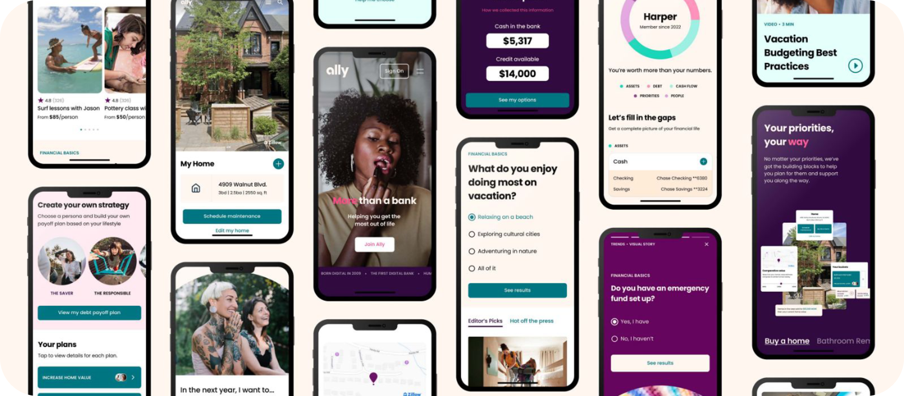
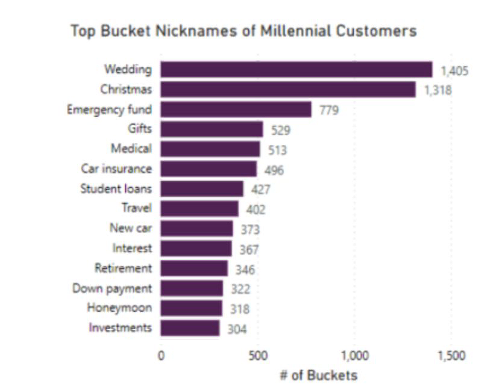
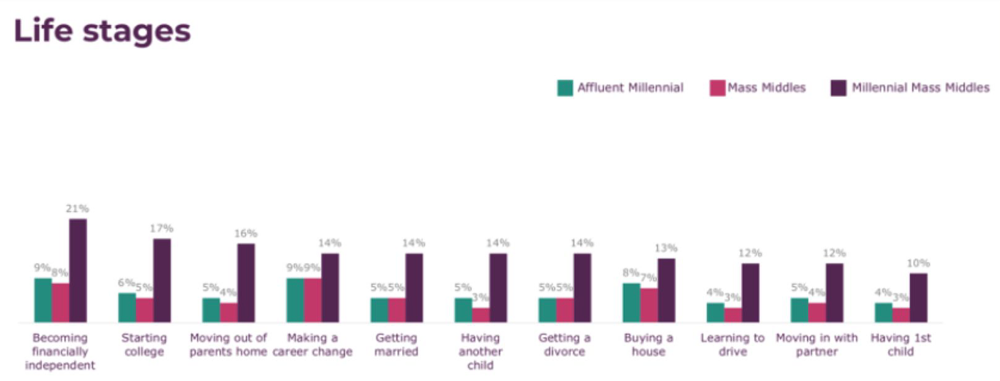
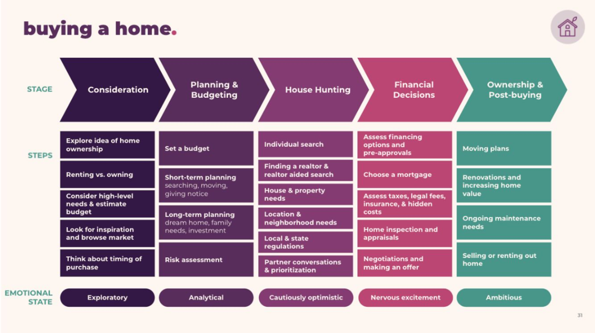
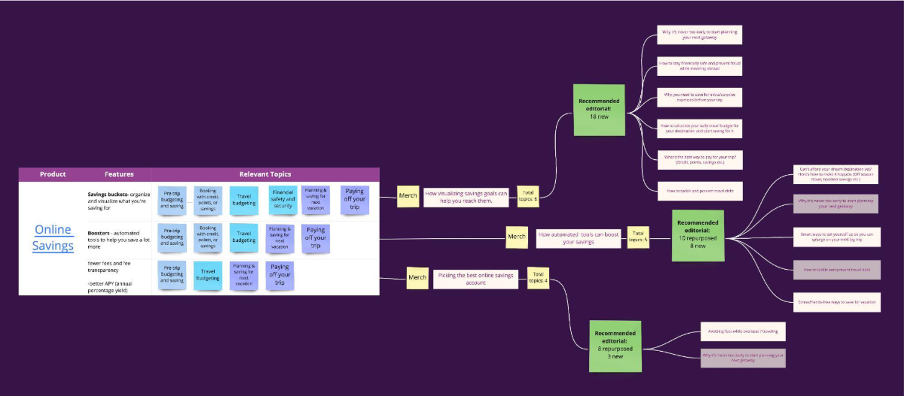
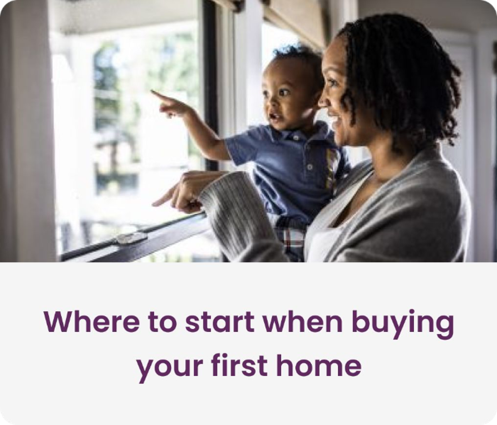
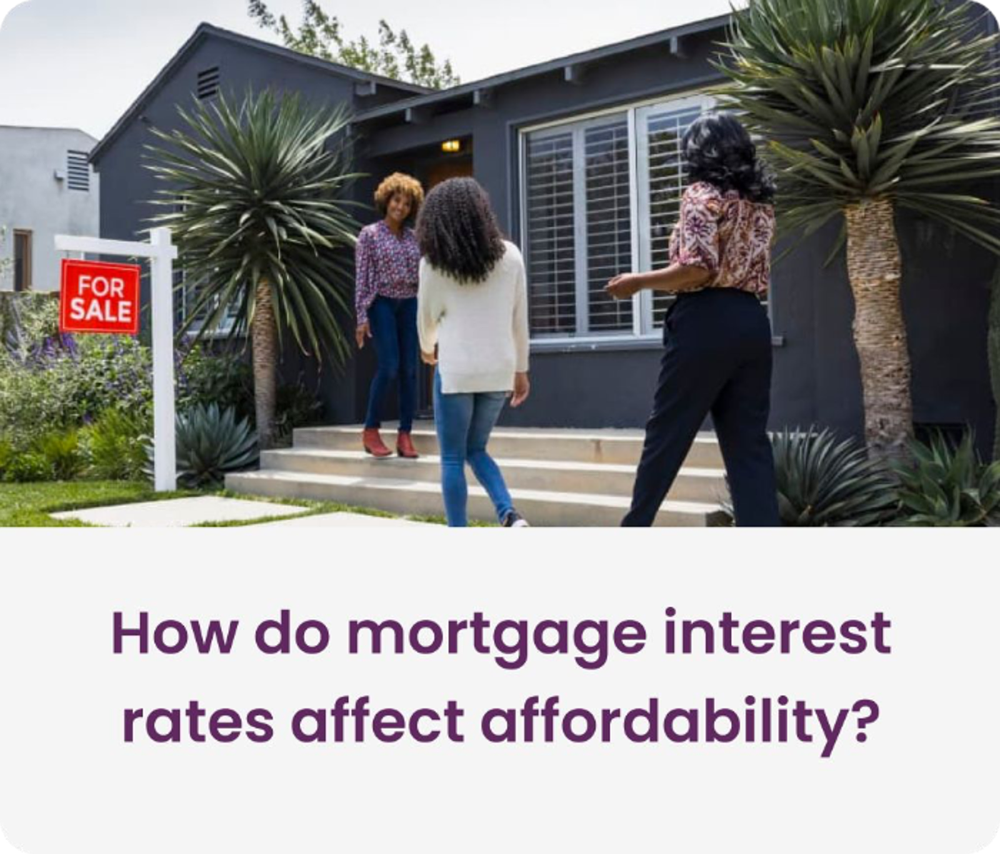
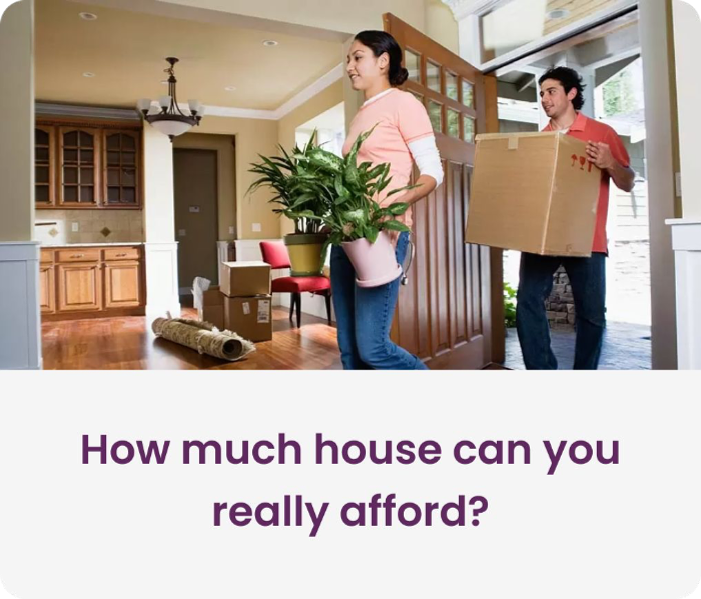
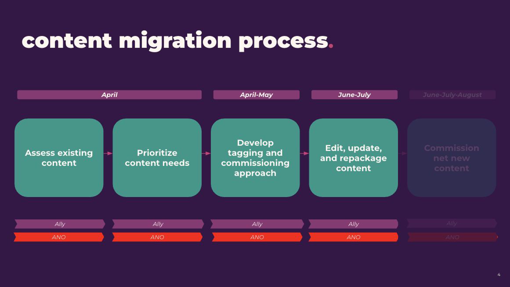
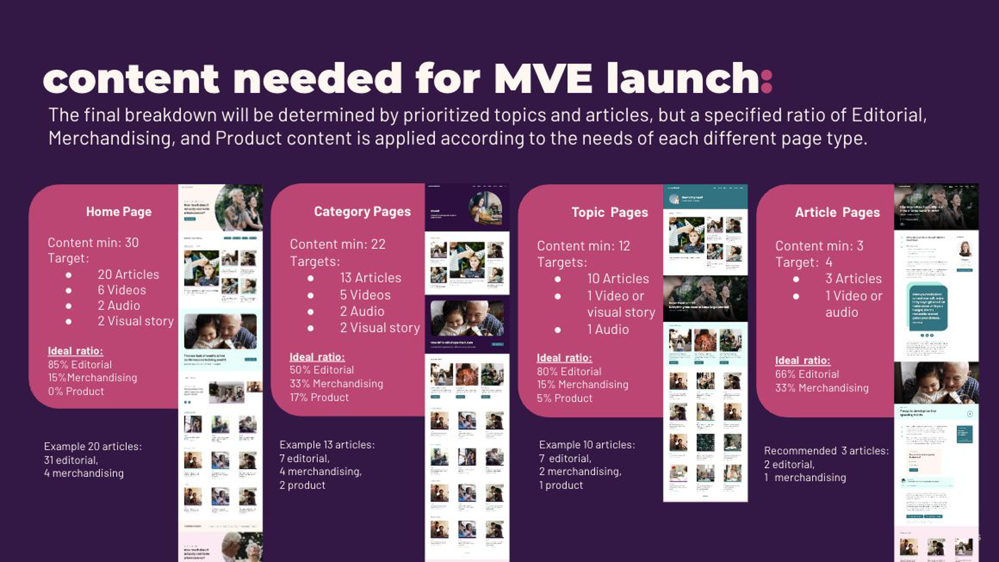

Content innovation as a business accelerator

Overview
By 2018 a high interest rate wasn't a differentiator anymore. Fintech startups were rising, big tech was moving in, and legacy banks were shoring up their positions. Ally needed to offer consumers value beyond the product itself.
We treated content as that expansion opportunity: shifting Ally's enterprise content strategy from an SEO traffic driver to a strategic platform that builds trust and pathways to product.
Across four years I worked on the vision, the audience journeys, the personalization approach, and the operating model behind it, then helped launch a new content hub, connected to the core banking app, designed to deliver a journey-led, personalized experience.
Background
Rate was the whole conversation, and every bank could match a rate. Ally needed a reason to be useful to consumers between transactions.
Spending and saving behaviors sat in the business, while content decisions were still being made off search volume.
The raw materials were already there: an existing hub, an audience, and a brand people trusted. What was missing was a strategy, an owner, and a system.
Building the foundation
The first year of work wasn't the hub. It was the foundation underneath it: enterprise-wide vision setting, a definition of what content is at Ally, editorial positioning, governance and process, KPI alignment, and an operating and organizational structure that put content ownership inside the business.
Content also needed its own name and voice, distinct from the bank brand and not a marketing channel. We created Conversationally, the editorial brand, along with a toolkit that keeps every new piece consistent no matter who writes it.
Make sense of today's digital financial world
A personalized content experience that delivers ultimate value for members and guests, and drives incremental revenue for Ally.
A behavioral data-led approach
Instead of starting from search volume, we started from what Ally already knew. I worked with proprietary spending and saving data, including what customers name their savings buckets, alongside search trends, to find the life moments people were actually planning for.


That analysis gave us five consumer journeys to build against:
From journey to content brief
Each journey got broken into detailed stages so we could understand what someone needs at each step, then reach them with content that meets that need. Buying a home, for example, runs from "considering it" through financing, house hunting, financial decisions, and closing.

From the stages we built a content funnel that ties editorial to merchandising to product, then turned the funnel into specific topics we could brief creators on. Mapping content back to relevant Ally products also let us recommend next best actions on every article, so there were no dead ends.




Strung together, the strategy paths a single person from a social post to an open account and back into personalized content.
Engages with a content piece on social
Lands on the dynamic content hub
Pathed to the next relevant article, signs up for the weekly newsletter
Engages with weekly newsletter content
Gets product messaging based on what they engaged with
Downloads the app and opens a savings account
Receives relevant editorial content in-app
Creates a college savings bucket
Gets targeted content on buckets and financial wellbeing for students, in app and email
Launching the content hub
I helped lead Ally's tech, UX, and marketing stakeholders through building and launching the new hub: an intelligent, modular system that serves the right content at the right time across Ally's ecosystem, and creates new points for data exchange: the more someone engages with content and content features, the more relevant the experience gets.
Launching also meant dealing with everything already published. Alongside the build we developed a migration strategy so Ally could repurpose its existing archive instead of starting from zero, with criteria for what was worth keeping and a prioritized set of content needed for launch.


Results
The journey-led approach outperformed the previous hub. Compared with the previous hub, the new experience cut bounce and lifted applications and conversion. In Ally's authenticated space, content outperformed product messaging on its own.
Measured against the previous hub's 2021 data, and against product messaging alone.
The work created a distinct role for content at Ally. We led their quarterly content planning sessions, replacing ad hoc requests with a planning cycle that briefed every piece against the journey strategy. We also built the organization strategy, wrote the role descriptions, and guided the recruiting process, which led to Ally standing up its own content team and formally hiring a Content Director. By 2023 they had taken the work in house.
🏆 Best Content-Driven Website and Best Use of Interactive Content, Content Marketing Awards, 2024